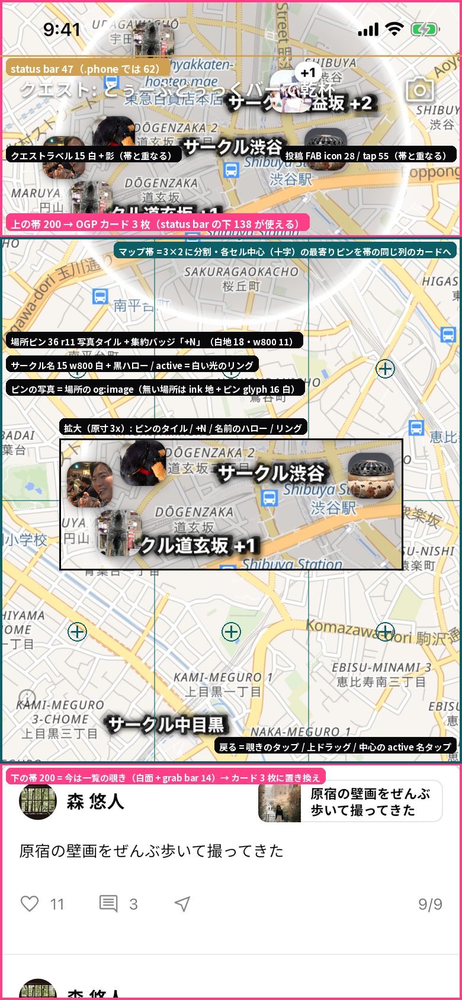
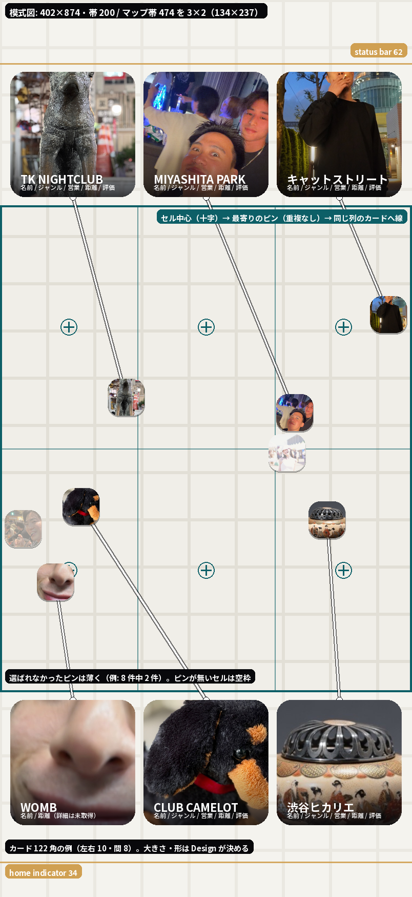

home の地図をピンチ / pan / フリックで全画面にすると真上から見下ろす。その状態で上の帯 200 と下の帯 200 に
場所のカードを 3 枚ずつ置く。カード = 正方形の写真 + オーバーレイ（名前 / ジャンル / 営業ステータス + 営業時間 / 距離 / 評価）。
どの 6 件かはマップ帯を 3×2 に割り、各セル中心に最も近いピン（上の行 → 上の帯・下の行 → 下の帯・同じ列）。
ピンとカードは線で結ぶ。仕様の正は HANDOFF.md（固定値・データ・探索軸の全文はそちら）。
左 = 実機（iPhone 17e・mock）の今の全画面を 2x に落とし、帯・3×2・既存 chrome を描き込んだもの。右 = 402×874 の模式図に mock の場所 8 件を真上投影し、規則の結果（6 件の割当と線）を描いたもの。数値は .phone（402×874・status bar 62）換算。

上の帯 0–200（status bar の下 138 が使える）にはクエストラベル（左・15 白 + 影）と投稿 FAB（右・icon 28 / tap 55）が すでに載っている。下の帯 674–874 は今は一覧の覗き（白面 + grab bar 14 = 戻る導線）→ カード行に置き換える。 地図にはサークル名（15 w800 白 + 黒ハロー）・active の白い光のリング・場所ピン（36 r11 写真タイル・密集は +N）が貼られている。

マップ帯 200–674 を 3 列 × 2 行（134×237）に割り、セル中心 x {67, 201, 335} × y {318.5, 555.5} に最も近いピンを 同じ列のカードへ（重複なし・候補が足りないセルは空）。8 件中 6 件が選ばれ、2 件は選ばれない。 カードは 122 角（左右 10・間 8）の例 = 写真 + 名前だけの仮。デザインは Design 側。
破ると実装できない。全文は HANDOFF.md。
| 項目 | 値 |
|---|---|
| 画面 | 402×874（.phone）・status bar 62 / home indicator 34・タップ最小 44 |
| 地図 | 画面全面・真上（pitch 0）・openfreemap liberty のライトな街路図。カードは地図の上に載る（帯は透明でも glass でも可） |
| 帯 | 上 y 0–200（使えるのは 62–200 = 138）/ 下 y 674–874（使えるのは 674–840 = 166）。下の帯は一覧の覗きを置き換える |
| マップ帯 | y 200–674（474）× 402 → 3×2 = セル 134×237。候補 = 中心がマップ帯の中にあるピン。1 場所 1 枚・空セルあり・集約ピンは代表 1 件 |
| ピン（今のまま） | 36×36 r11 写真タイル・影 0 2px 8px rgba(8,8,11,.35)・写真なし = ink 地 + glyph 16 白・+N バッジ（白 18 / 11 w800）・選択 = 白枠 2.5 + scale 1.14。新しいマーカーは発明しない |
| 線 | ピン ⇄ カード。ライトな地図・他のピン・名前の上でも読める。pan 中は毎フレーム追従 = 直線か単純な曲線 |
| カード | 正方形・写真フルブリード（無ければ ink + glyph）・オーバーレイに 名前 / ジャンル / 営業 + 時間 / 距離 / 評価。1 帯に 3 枚 = 同じ大きさなら ≤ 122 角（左右 10・間 8） |
| 残る要素 | サークル名（域中心）と active のリングは地図に残る |
| DS | Noto Sans JP / Inter・絵文字なし・glass ≤ 6 / 画面・アイコン assets/icons/・写真 assets/sample/ |
| 実装 | Flutter。地図・ピンは WebView（DOM）、カードと線は Flutter が上に描く（JS が毎フレームピンの画面 px を流す）。specimen は静的 HTML + 最小 JS |
| 項目 | 例 | 備考 |
|---|---|---|
| 名前 | TK NIGHTCLUB / のんべい横丁 / キャットストリート | 常にある。長い名前あり |
| 写真 | og:image 1 枚 | 無い場所もある |
| ジャンル | night_club / cafe / park | 英語の type 文字列 → 表示名（ナイトクラブ）は要変換 |
| 営業ステータス + 時間 | 営業中 5:00 まで / 営業時間外 20:00 から / 24時間営業 / 営業時間は未取得 | 深夜跨ぎあり |
| 距離 | 368m / 1.2km | 現在地から |
| 評価 | 4.5 (1,500) | 無い場所もある |
| 詳細未取得 | — | ジャンル / 営業 / 評価が全部無い場所 = 名前 + 距離だけ |
上の帯のクエストラベル・投稿 FAB と 3 枚のカードの折り合い（隠す / 動かす / 避ける）。下の帯は覗きを置き換えるので戻る導線（上ドラッグ / チップ / ×）を決める
~122 角に 5 項目。優先順位・段組み・何をチップに（● 営業中 / ★ 4.5）・写真をどこまで見せるか・最小文字 11
太さ / 色（白 + 暗ハロー・ink・破線）/ 端点 / ピンとの前後 / 近いとき遠いときの見え方。交差は避けなくてよい
写真なし / 未取得 / 評価なし / 24 時間 / 深夜跨ぎ / 長い名前 / 空セル / 集約 +N / 選択中のピン
pan で割当が変わるときの差し替え（cross-fade / スライド）と線の追従。全画面に入るとき（地図が 360ms で寝る）にカードが現れる
カードのタップ = ピンのタップと同じ（全画面を解除して場所モード）。それ以外の役割を持たせるなら提案
.phone 実配置・地図 = place-map.js 真上 + 8 ピン + 6 カード + 6 線・案 3〜4 を横に・状態バリエーション・各案に @dsCard と狙い 1 行）
/ MapFullPlaceCards.css（差分だけ）/ 推し案と理由 / _ds_manifest.json の cards に登録 / bundle。
触らない: handoff/TimelinePlaceMode/* / handoff/PlaceCard/* / DesignSystem/colors_and_type.css